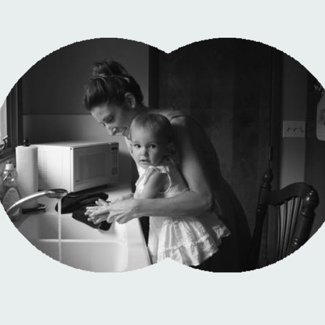
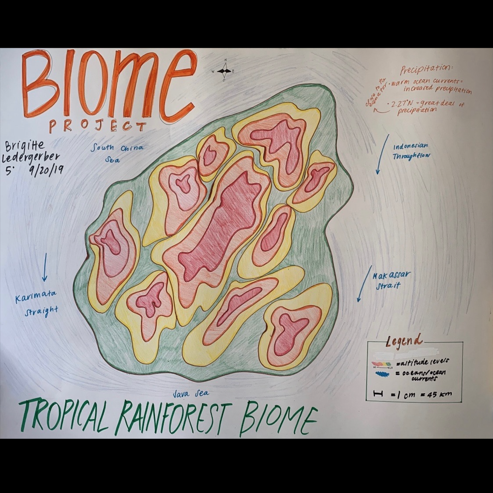
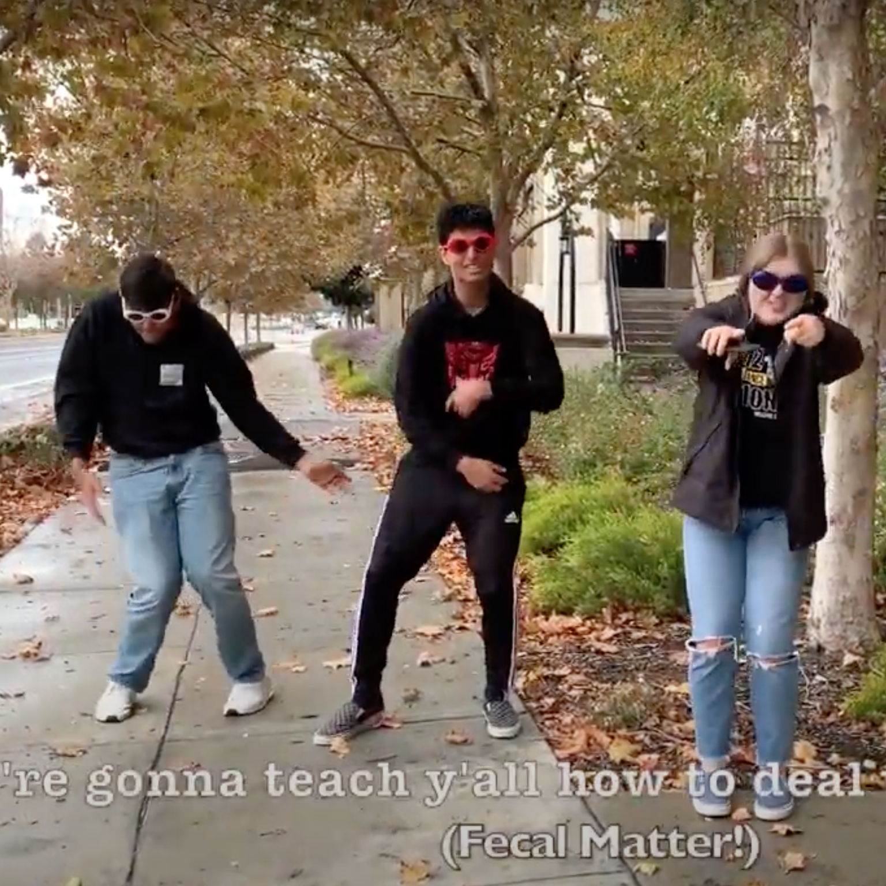

Solar Hydrogen Vehicle
Principles of Engineering - November 1st to 16th, 2018
The objective of this project was to build a car prototype that demonstrates solar and hydrogen technologies. The car must also test and compare the power sources. My specific role in this project, as the group leader, was designing ways for the cells to be held in place while the car is moving, write about my team's final design in the documentation, and keeping my team on task. One challenge my team and I overcame was finding an effective and cosmetically pleasing way for the cells to be secured to the car while it is moving. At first, my group utilized rubber bands to do so, but the cells were not stable enough, and the design looked unprofessional. I was the group leader of this project, which means I was responsible for my team's productivity and completing the project on time. Working with a team also required the four of us to be open-minded and willing to compromise on design decisions.

Aerodynamic Projectile
Principles of Engineering - January 18th to 24th, 2019
For this project, I had to build two prototype projectiles. The objective was to exhibit properties of velocity to test and evaluate aerodynamic design decisions. My role in this project was to brainstorm and design two prototype projectiles. First, I was required to create and build one design, then test it. After evaluating my first design through a launch test, I made a second design with modifications to aid my projectile in flying farther. I was also responsible for the analysis and collection of my data and modification process. One challenge my team and I overcame was how to modify our projectiles for them to be lighter and have less wind resistance. We decided to omit the exposure of the paper material on the rocket. Making the surface of the rocket smoother resulted in less air resistance. While working together, my partner and I were required to be respectful of each other's decisions and ideas while remaining on task and focused.

Online Portfolio
Computer Science Principles - November 6th to December 3rd, 2019
The objective of this project was to practice website development. I created a multi-page website using HTML and Bootstrap. The main challenge I faced with this project was formatting the home page so that all of the different cells lined up with each other, leaving no extra white space. The easiest part of this project was changing the colors of the text and buttons. The most interesting part of this project was learning about how different HTML commands interacted with Bootstrap. I tested various commands to modify aspects of the website. This was an individual project. Working alone was beneficial because it allowed me to control the timeline in which I would complete the project and work on the project more efficiently. However, I found that when working alone, I did not have the benefit of a variety of ideas from different brains. I also missed the fun of working in collaboration with others.
Image Manipulation Project
Computer Science Principles - March 16th to April 3rd, 2020
The objective of this individual project was to manipulate a photo to meet the needs of a client. My role was to edit and tweak pre-existing code to change the appearance of an image. Along with this aspect of the project, I also needed to create a google slideshow explaining my changes and log my progress in a project log. A challenge I overcame was finding a unique and original way to edit my image to meet the client's needs. To overcome this challenge, I took time to explore the code. I figured out how the image would change based on which values in the code I edited. This exploration helped me to gain a better understanding of how the code ran. After testing many different outcomes, I settled on the one I believed was creative and original.
Biome Poster Project
AP Environmental Science - September 13th to September 20th, 2019
For this project, I created a poster displaying a Biome and its properties. The purpose of this project was to answer these questions: Have you ever wondered why different biomes or ecosystems are located where they are? Why do San Diego, California, and Savannah, Georgia have different climates when they are at the same latitude? I chose a random set of coordinates to select my biome, and I landed on Borneo. Borneo is a tropical rainforest biome. I researched the topography of the island and drew the changes in elevation on my biome poster. I also labeled different ocean currents because these currents affect the body of the land's climate. Determining the measurement scale between the actual island and my drawing was the most challenging part of this project. The least challenging aspect of this project was identifying the island's climate and biome. The nearby currents were also easily identifiable.
Sustainable Agriculture Project
AP Environmental Science - November 22nd to December 2nd, 2019
This project required me to educate myself on an environmental science topic and design a presentation to teach the topic to the rest of the class. I chose to do this project in a group because I believed it would aid in the brainstorming process. My group and I did our project on Sustainable Agriculture and presented it to the class using a music video. We created an original song that covers sustainable agricultural and food production practices. We taught our class that the goal of soil conservation is to prevent soil erosion. In our video, we defined various soil conservation methods. These methods are contour plowing, windbreaks, perennial crops, terracing, no-till agriculture, and strip cropping. My group and I also taught our class about crop rotation and the addition of green manure/limestone, which are strategies to improve soil fertility. Finally, we explained rotational grazing to our class. Rotational grazing is the regular rotation of livestock between different pastures to avoid overgrazing a particular area. The most challenging aspect of this project was writing lyrics to an original song covering all of these topics. The least challenging parts of this project were the research and the video production. We completed extensive research before producing our video, which was easy to do because of our previous knowledge of the subject. The video production was simple because working in a group made it easier to record and edit our video.